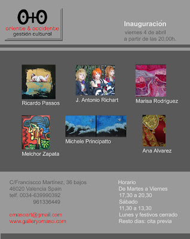
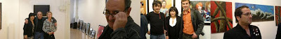
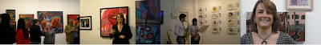

Exposición del 04-04-2008 a 07-04-2008
viernes, 4 de abril de 2008
{kind=link}

La Galería O+O tiene el placer de presentar la exposición colectiva compuesta por las obras de seis artistas: Ricardo Passos, Marisa Rodríguez Alonso, José Antonio Richatt, Melchor Zapata, Ana Álvarez y Michele Principatto. La muestra incluye obras de distintos formatos y técnicas: fotografía, técnica mixta, instalación y pintura. Hasta el 6 de mayo se podrá disfrutar de la obra conceptual de Ana Álvarez con su instalación Mesa Puesta, los retratos expresionistas de Melchor Zapata, la particular mirada de un occidental en Japón con las fotografías de José A. Richatt, los paisajes de vivos colores de Marisa Rodríguez Alonso, la figura de la mujer dentro de la obra de Ricardo Passos y las pinturas de trasfondo político-social de Michele Principatto.
{kind=link}

{kind=link}

Las obras del artista portugués Ricardo Passosse alejan de la representación convencional en busca de un universo de emociones. Sus figuras femeninas están basadas en el juego de color y luminosidad, su sensual piel es de una fémina poderosa, romántica, cruel, triste, exuberante y soñadora. La mujer guía la energía creativa de Passo. La plasticidad y los volúmenes dominan su obra plástica, dimensiones exageradas que eliminan el concepto del físico, creando una simbiosis entre forma y sentido; líneas hechas materia, color hecho emoción. Logra impactarnos visualmente con una sutil unión de contrarios: lleno y vacío, la asistencia y las ausencias, luces y sombras, la serenidad y el sufrimiento. El gesto pictórico de Ricardo Passos es decidido, delicado y vibrante, lleno de una tensión emocional que nos habla de la melancolía.
La artista Marisa Rodríguez Alonso (Madrid, 1961), interesada por todos los temas relacionados con el arte, en los últimos años ha enfocado su actividad artística a la pintura, profundizando en diferentes técnicas y formatos hasta lograr crear un estilo propio. Hablar de su obra es hablar del color. Cuando te encuentras delante de sus cuadros la luminosidad de sus tonalidades te envuelven, con un dibujo simple e ingenuo, de líneas abocetadas, relleno de toda una gama de vivos colores. En el año 2000 forma junto a otras pintoras el Grupo Arte4. Tras multitud de exposiciones sus obras se encuentran en colecciones privadas de varias ciudades de España, en París y Viena.
José Antonio Richatt Peris nos muestra en esta exposición parte de su serie de fotografías realizadas en Japón, donde residió durante un año y medio. Su interés principalmente es el retrato fugaz y la fotografía social. Busca poder definir un país, en este caso Japón, mediante el retrato de su gente. Fotografías de personas que cuentan algo, que transmitan con su expresión, su mirada, un gesto... como son, sus tradiciones, hábitos, como viven, como aman. La serie de Japón de José Antonio Richatt nos obsequia con una doble visión de este país reflejada en sus habitantes, el contraste entre un país lleno de tradiciones milenarias que al mismo tiempo convive con la modernidad llevada al extremo.
José Antonio Richatt Peris nos muestra en esta exposición parte de su serie de fotografías realizadas en Japón, donde residió durante un año y medio. Su interés principalmente es el retrato fugaz y la fotografía social. Busca poder definir un país, en este caso Japón, mediante el retrato de su gente. Fotografías de personas que cuentan algo, que transmitan con su expresión, su mirada, un gesto... como son, sus tradiciones, hábitos, como viven, como aman. La serie de Japón de José Antonio Richatt nos obsequia con una doble visión de este país reflejada en sus habitantes, el contraste entre un país lleno de tradiciones milenarias que al mismo tiempo convive con la modernidad llevada al extremo.
El pintor y escultor Melchor Zapata (Alcolea del Río, Sevilla, 1946), estudió pintura y dibujo en Lérida hasta que en 1965 se traslada a Castellón, donde empezará a exponer a partir de los años setenta. Desde entonces ha realizado más de 250 exposiciones individuales en galerías de distintas ciudades del mundo como Madrid, Barcelona, Sevilla, Valencia, Lérida, Vitoria, Castellón, Granada, Salamanca, Vigo, Marbella, Tokio, New York, París, Miami y Oporto. Como escultor ha realizado retratos en bronce, como el de Antonio Machado, el del rey Jaume I, el de los directores de cine Rafael Gil y Juan Antonio Bardem, y los monumentos en hierro de "El Tombatossals", "El Arrancapins" y "Toro" en Castellón, "EL Árbol" en Burriana. Pero por encima de todo Melchor Zapata se considera un pintor, más que un escultor, y en varias ocasiones ha afirmado que su escultura nace de su pintura. Sus obras pictóricas, como podemos ver en esta exposición, recuerdan al Expresionismo alemán como la obra de Grosz, Kokoska, o Waming.
La artista de Santander Ana Álvarez nos presenta fotografías de la serie De Luces y una instalación de la serie Masticarte. Tras realizar cursos de técnicas de fotografía en Santander, de diseño y fotografía en el American College de Londres, de aerografía en Guatemala, de escaparatismo en Madrid, de talla y escultura así como de origami, Ana Álvarez comienza a exponer su trabajo a partir de la segunda mitad de los ochenta en diferentes salas españolas. Junto a Domingo Sarrey ha realizado varias exposiciones, montajes e instalaciones basados en la utilización de la fotografía y los medios audiovisuales. Destacan entre sus trabajos Latidos Urbanos 2008, La Ciudad Iluminada, la Instalación Crionización, entre otros.
Michele Principato traduce sus ideales en el lienzo apoyando valores universales como la paz, la solidaridad, la tolerancia y el amor. Como testigo de los acontecimientos históricos, sus pinturas dentro del expresionismo abstracto desafían la razón y la emoción. En sus obras la figura humana ha desaparecido pero no su huella, cielos con manchas negras contaminantes, pequeños trozos de rojo signos de carne maltratada o ramas retorcidas y entrelazadas sobre fondo rojo. La elección de los colores y matices utilizados en sus obras encierran en sí mismo experiencias, historias y culturas. Michele realiza una pintura inspirada en valores e ideales poéticos, como un interprete de nuestro tiempo que nos habla con fuerza y vitalidad de la decepción por la realidad de la política hipócrita.